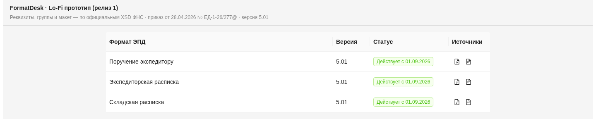
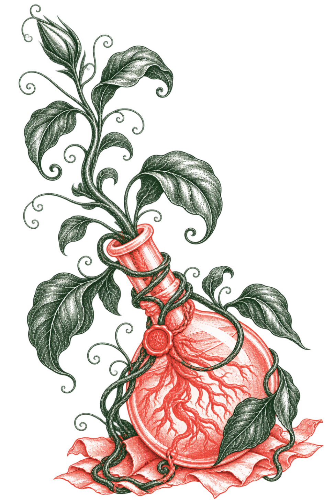

// B2B · Операторы ЭПД · Форматные приказы ФНС
для приказов
ФНС
FormatDesk собирает экран версии форматного приказа ФНС: реквизиты с якорями XSD и каркас для макета.
Открыть Lo-Fi прототип↗Каталог → Реквизиты → Якорь → Макет
✦ IАлхимия простого интерфейса
01 / Для кого
Задача руководителя
Каждый новый формат — один и тот же цикл: найти приказ и XSD, разобрать схему, перегруппировать поля для постановки и макета.
От сложного первоисточника
Опыт сотрудника
Аналитик: статус версии, реквизиты и якоря XSD на одном экране.
Дизайнер: макет документа с теми же группами полей — без созвона ради списка.
К понятной структуре
02 / Проблема
Из полевых
интервью
01
Действующий приказ и XSD ищут на nalog.gov.ru вручную.
«Я не понимаю, это актуально сейчас или нет…»
02
XSD может измениться без смены номера версии — сигнала об этом нет.
«На сайте не видел обновлений».
03
Поля вручную переносят в Excel — промежуточный эталон для постановки и макета.
«Обычная таблица… не особо визуально понятно».
04
ИИ-черновики сверяют с текстом приказа построчно.
«Каждую строку перепроверяешь».
03 / Экраны
От первоисточника
до макета
FormatDesk / Lo-Fi
Схема интерфейса

Первоисточник → Структура → Интерфейс
Каталог форматов ЭПД: таблица с версией, статусом «действует с 01.09.2026» и ссылками на приказ и XSD

04 / Состав продукта
Фиксация версии в Confluence и экспорт полей — следующие релизы.
Diff версий, СВЭД-форма, встройка в Figma.
Всё нужное. Ничего лишнего.
4 шага: Каталог → Реквизиты → Якорь → Макет
Каталог форматов, экран версии с реквизитами, якоря XSD и макет документа — всё это уже можно потрогать в кликабельном Lo-Fi прототипе.
Открыть Lo-Fi прототип↗ ✦Из хаоса — в систему